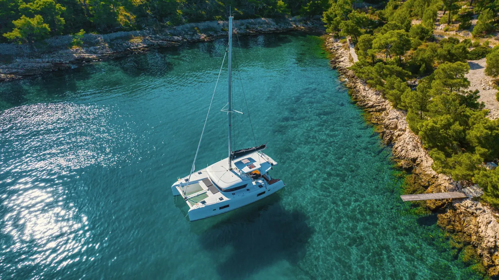
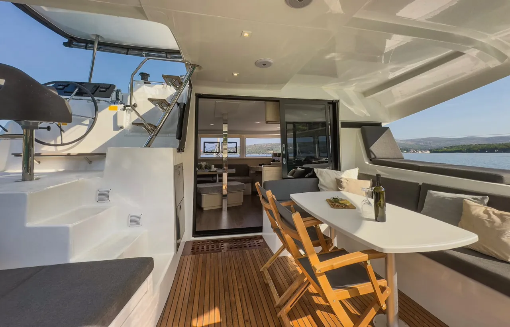
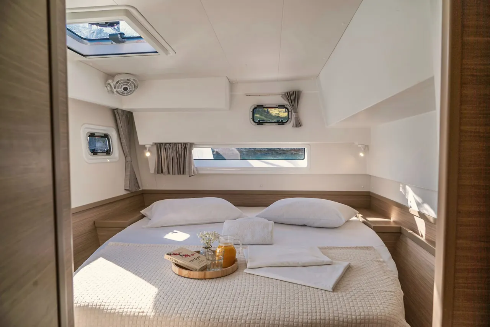

7 NOCY NA ADRIATYKU
Tydzień żeglowania i odkrywania Chorwacji.

Majówka na Adriatyku!
Tym razem zabieramy Was na pokład katamaranu!
Przed nami tydzień odkrywania Chorwacji od strony morza - malownicze wyspy, turkusowe zatoki, klimatyczne miasteczka…Poranna kawa z widokiem na Adriatyk, kąpiele w pięknych zatokach, żeglowanie i wieczory w niewielkich portach. Bez codziennego pakowania walizek i bez spiny.
Ekstra ludzie, ekstra widoki i ekstra żeglarskiej przygoda!
Tydzień żeglowania i odkrywania Chorwacji.
Lagoon 42, przestronne wnętrze i miejsce do wspólnego odpoczynku.
Maksymalnie 8 uczestników na pokładzie.
Morze, natura, lokalne smaki i wspólne przygody.
Siedem nocy na katamaranie, codziennie nowe widoki i Chorwacja z innej perspektywy!
Wypływamy na Adriatyk, żeby odkrywać wyspy, odpoczywać w malowniczych zatokach i poznawać klimatyczne portowe miasteczka.
Będzie czas na żeglowanie, kąpiele, spacery, wspólne kolacje i nawet na odpoczynek.
Najbardziej lubimy w takich wyjazdach to, że każdy dzień może wyglądać inaczej. Czasem spędzimy więcej czasu na wodzie, innym razem zatrzymamy się w miejscu, które szczególnie nam się spodoba.
Nie trzeba mieć doświadczenia żeglarskiego. Rejs prowadzi skipper, a my możemy skupić się na byciu TU I TERAZ.
Dużo morza, pięknych widoków i dobrej atmosfery - po naszemu!

Przez tydzień naszym domem będzie komfortowy katamaran Lagoon 42.
Na pokładzie znajdują się:
To bardzo komfortowa przestrzeń zarówno na wspólne śniadania, jak i spokojne wieczory po całym dniu na wodzie.
Port bazowy katamaranu: Sukošan - Marina Dalmacija.

Kadry LONGWAVE
Chorwacki Adriatyk daje nam mnóstwo możliwości.
Mamy dwa kierunki, które szczególnie nas inspirują!
Hvar, Korčula, zielona wyspa Mljet i wyjątkowy Dubrownik.
Historyczne porty, kamienne uliczki, piękne zatoki i prawdziwy dalmatyński klimat.
Šolta, Primošten, Skradin, Šibenik, Zlarin i Rogoznica.
Kameralne wyspy, malownicze miasteczka oraz możliwość odwiedzenia Parku Narodowego Krka.
To inspiracje, a nie sztywne trasy rejsu. Ostateczny kierunek i postoje dobierzemy do pogody, portu wypłynięcia i warunków na morzu.
Nie zakładamy odwiedzenia wszystkich wymienionych miejsc.
Dla dorosłych, par, przyjaciół i wszystkich, którzy lubią aktywne podróżowanie.
Nie musisz mieć doświadczenia na jachcie. Wystarczy, że lubisz morze, nowe miejsca i wakacje spędzane w dobrym towarzystwie.
To wyjazd dla tych, którzy chcą na chwilę oderwać się od codzienności, odkrywać Chorwację i poczuć prawdziwy żeglarski klimat.
Udział rodzin z dziećmi ustalamy indywidualnie, uwzględniając wiek dzieci, warunki na pokładzie i zasady bezpieczeństwa.
Kawa i śniadanie na pokładzie, lunch z widokiem na morze, a wieczorem lokalne chorwackie smaki!
Katamaran ma wyposażoną kuchnię, więc możemy wspólnie przygotowywać posiłki na miejscu. Będą też okazje do odwiedzania restauracji i tawern w portowych miasteczkach.
Wyżywienie uczestników organizujemy i opłacamy we własnym zakresie.
*Wyżywienie skippera jest już wliczone w cenę rejsu.
Cena regularna: 6190 zł / osoba
CENA PROMOCYJNA: 5990 zł / osoba
Kawa, wspólne śniadanie i poranek z widokiem na morze.
Żeglowanie w kierunku kolejnej wyspy lub zatoki.
Postój, kąpiel i chwila odpoczynku na pokładzie.
Dalszy etap rejsu albo spacer po chorwackim miasteczku.
Zachód słońca, odpoczynek i czas z ekipą.
Wspólna kolacja, rozmowy i planowanie kolejnego dnia.
Plan dnia i kierunek żeglugi dostosowujemy do pogody oraz decyzji skippera.
Morze, natura, piękne miejsca i ludzie, z którymi chce się dzielić kolejne przygody.
Tym razem zamieniamy naszą bazę na pokład katamaranu i ruszamy odkrywać Adriatyk.
Super będzie stworzyć z Wami kolejną historię LONGWAVE!
Porozmawiajmy o Twoim wyjeździe
Opowiedz nam, co planujesz. Pomożemy dobrać wyjazd, termin lub program dla Twojej grupy.